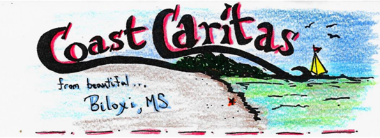

I am a privately vowed man who follows the spirituality of Saint Charles de Foucauld. I live on my own, in the world, in Biloxi, MS.
Publications:
I offer the electronic versions of my writings free of charge. If they benefit you, please consider a donation to a charity that assists the poor.
|
With Glory and Honor You Crowned
Them – a book on the 7 female martyrs of the Roman Canon:
Perpetua, Felicity, Agatha, Lucy, Agnes, Cecilia, and Anastasia. Full of beautiful
artwork, history, and ancient texts.
PDF Version |
|
|
Like a Dove in the
Cleft of the Rock – a book that views the climb of holiness through the
lens of the Song of Songs and the life of St. Mary Magdalene. Based on a
retreat preached in 2013 to the Apostles of the Interior Life.
PDF Version |
|
|
Lazarus Speaks – a
book of interviews with homeless people on the Mississippi Gulf Coast.
PDF Version |
|
Europe 2017. Patron - St. Thomas More
Camino Portuguese 2019 Patrons - St. James the Greater, Our Lady of Fatima
Becket Way 2022. Patrons - Saints Thomas Becket, Thomas More, Augustine of Canterbury
France 2025. Patrons - Sts. Mary Magdalene, Charles de Foucauld, and Joan of Arc
Link to Old Blog (I use public Facebook posts now): Old Blog
Contact:
Matthew Manint
325 Hiller Dr.
Biloxi, MS 39531